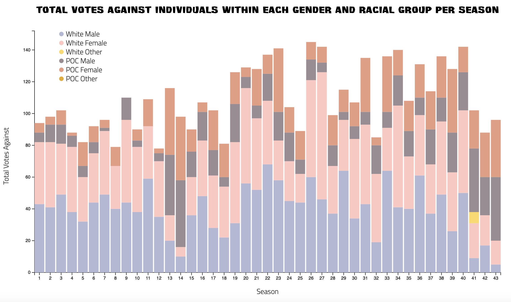
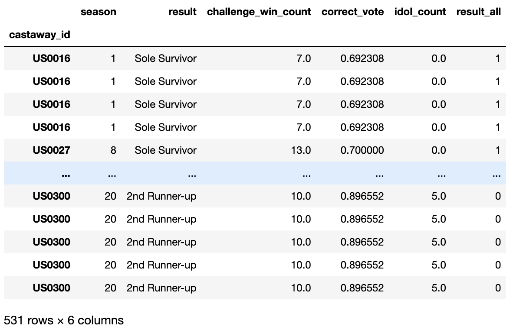

Outwit, Outplay, Outlast
An Analysis of the Characteristics that Contribute to the Success of Contestants on Survivor
Synopsis of the show
Survivor is a show on CBS that has been airing since 2000 and is currently on its 44th season.
The motto of Survivor is to outwit, outplay, and outlast other contestants to make it to the end. When first arriving to the island, contestants are split into separate tribes, who live apart from each other. These tribes compete against each other to win tribal immunity - the losing tribe goes to tribal council where the tribe members vote out one of their members. At around the halfway point of the game, the tribes merge into one, so everyone is now living together, challenges are for individual immunity, and everyone goes to tribal council. There are also reward challenges, where whoever wins usually can choose other contestants to join them on the reward (food or spa or scenic) usually used to strategize. After the merge, whoever is voted out joins the jury, and they observe the rest of the tribal councils. When there are two or three contestants left, it is final tribal council, where each contestant makes their case to the jury of why they deserve to win, and the jury can also ask questions. The main advantage that has been introduced to the game are hidden immunity idols - if a contestant finds one, they are able to play it at a tribal council to have immunity from that vote.
Background
Each season of Survivor is a complex web of social dynamics, strategic gameplay, and unpredictable twists and turns that keep viewers engaged and guessing until the very end. While some seasons have an obvious front-runner who dominates the gameplay in all aspects, other seasons can be full of surprises, with underdogs rising to the top or unexpected alliances shifting the balance of power. Despite the intricacies and dynamics in the game, viewers continue to try and predict the winner each season; however, even longtime superfans of the show can be left guessing, caught off guard by unexpected developments in the game. Over the years, Survivor itself has also evolved, introducing new twists and advantages each season. Given this ever-changing landscape, is it possible to predict the winner based on their characteristics?
Problem
Because Survivor has been such a long running show, it does have a certain level of popularity and a core group of fans and viewers that continue to watch each year. This means that there is a diverse population of viewers. While most viewers have fan favorite players that they root for and want to see win, there are some viewers whose dream is to compete on the show. There are also some viewers who watch not just for entertainment, but because of the intricate social commentary and social dynamics of the show.
This means, whoever the viewer is, in general, it would be interesting and helpful to have a tool that predicts the winner of a season based on demographic and gameplay information. This can be done during the airing of the current season with only basic information, or after the season ends with all of the information. These transparent predictions would inform the different types of viewers listed above, as you know what factors and information go into the model.
Project motivation
I was one of these viewers, who, after watching so many seasons of Survivor, and many times being surprised by the winner, many times not, wanted to see if there was a way to predict the winner, and see what characteristics or factors are common in previous winners that could help predict future winners in future seasons. This is a personal project of mine and it's also still in progress...
Dataset
I used a public dataset by Daniel Oehm, called survivoR, as the datasets are in R. Here is the dataset on Github: link. However, because I am more familiar with models in Python, I used R to convert the data files to csv files that I was able to read in Python. There were many data files, including ones with demographic information of the contestants, challenges, immunity idols, etc.
Existing methods
Currently, the main way viewers predict winners is called Edgic.

Some of the cons of this method is that it is very time consuming and fairly subjective to the individual viewer.
How my project is different:
- Since I am using an online dataset, the features may be more limited in some ways but the data is indisputable. The features are not subjective.
- A ML model would run faster than meticulously analyzing each episode of a season.
- Edgic uses the edit of the show to make predictions, which this project doesn't take into account. The edit can tell viewers a lot about the dynamics between players and reveal who the producers of the show are painting as villains (who likely will not win) and who are the underdogs (who are given aninspirational storyline and are more likely to win). This means that the individuals they want us to root for are probably the ones who win or make it far in the game and probably have a better edit.
Project overview
- I created a few visualizations for an open-ended "choose your own topic" class project for which I knew I wanted to use for this project.
- I have attempted to code some models thus far... most of them are currently failing, but one is showing some promise, and I'm continuing to build upon it. This means either my models are not on the right track or there is just not a good way to predict (no factors stick out as important).
Project process
The project process that I took can be likened to the Survivor process.
- Meet the contestants (Exploratory Data Analysis): The first thing I did was look at all the data and perform some exploratory data analysis. This was done by looking at descriptive statistics and making visualizations for some of the features. 
- Tribal council (Data Cleaning and Prepping): I then cleaned the data to get rid of redundant and unhelpful features.
- Merge (Data Combination): Then, I combined the dataframes to get all of the necessary features into one place in order for the model to receive the complete information.
- Individual challenges (Feature Engineering): Using the merged dataframe, I performed feature engineering and reformatted the data by scaling or one hot encoding individual columns. For example, in one of the models I decided to focus only on aspects within the game. So, I extracted information on how many challenges contestants won, how many times they were on the "right side of the vote" (voted for the person who ended up going home), and how many hidden immunity idols they won. 
- Final tribal council (Run the Model): Finally, I ran the model to get the predicted winner. The model that used gameplay information and predicted the winner among the contestants at the final tribal council had an accuracy of around 78%, as compared to a baseline model that predicts all "win" or all "lose", with an accuracy of around 50%. The Matthew's correlation coefficient was also used to measure the "quality" of the model's predictions. It output values of around 0.6 for both the train and test set, meaning that the predictions that were made were better than an average random prediction (0), but not perfect (+1).
This process was repeated multiple times, tuning features depending on what was successful or not. I am still in this process of refining the model. The goal is to get a final model that performs better than random guessing, and the current "final" model that I have does.
Main findings
In progress...
How much do contestants demographics such as age, personality type, where
they're from contribute to whether or not they win?
Based on the models that took the demographic information into account, there isn't much that distinguished winners just based on these
characteristics.
How much do contestants' gameplay outcomes and actions contribute to whether
or not they win?
Based on the model that is currently performing the best, the gameplay is much more important and informs who the winner will be much more than
an individual's demographics and characteristics.
A lot of luck is involved in this process, as many times individuals who win and come back to play again
aren't as successful. In addition, the conditions of Survivor are meant to be harsh and unlike anything anyone has been
through before. Starving and living outside with horrible weather conditions along with sleep deprivation can really
affect anyone's ability to make good, informed decisions.
Reflection
This project was definitely difficult, but super interesting for me, as a fan of Survivor! I think it is really testing my feature engineering skills, in that the majority of the features that actually are important need to be extracted and computed from the data - it is not just a given column. Just thinking of these features was also difficult.
- Challenges of this project: Figuring out what features to use, how to evaluate the model, what model to use - these were all huge challenges that I'm still working at.
- What I could continue doing with it: I definitely could keep working at this project, coming up with more features and as I learn more, I can also try other types of models.
- What could be better
- What would I do differently next time
Links
Here is the link to the code: github.com/karinaechen/survivor
Here is the link to the visualizations: link